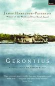
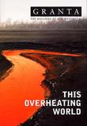

James Hamilton-Paterson
James Hamilton-Paterson was born in London in 1941.
He studied at Oxford University, where he won the Newdigate Prize for Poetry. Over the last 20 years he has divided his time between the Philippines and Italy. He now spends most of his time in Tuscany, although he still travels extensively.
His books include America's Boy, The View from Mount Dog, Seven-Tenths, Gerontius (which won the 1989 Whitbread First Novel Award), The Bell-Boy, Griefwork, Ghosts of Manila, The Music, Three Miles Down, and Playing with Water. His most recent novel, Cooking with Fernet Branca is published by Faber. He is a fellow of the Royal Geographical Society. He first appeared in the magazine with 'Sea Burial' in Granta 61 in 1998.
Granta Books
| Loving Monsters (Paperback)
A chance encounter in a local store leads a writer to undertake to record the life of his neighbour, the enigmatic Raymond Jerningham Jebb; 'Jayjay' to his friends, self-styled imposter and lover. |
|  | Gerontius
Gerontius is the story of a real voyage in the life of Sir Edward Elgar, the celebrated composer of the quintessentially English tune 'Land of Hope and Glory'. |
| Loving Monsters
A chance encounter in a local store leads a writer to undertake to record the life of his neighbour, the enigmatic Raymond Jerningham Jebb; 'Jayjay' to his friends, self-styled imposter and lover. |
| America's Boy
The overthrow of Ferdinand and Imelda Marcos in Cory Aquino's 'People Power Revolution' in 1986 briefly focused world attention on the Philippines. James Hamilton-Paterson takes a fresh look at this strange, infamous couple and the country they ruled. |
| Playing With Water
Playing with Water is an account of several seasons alone on a Philippine island, which the author calls ''Tiwarik. |
Magazine
| The End of Travel
from Granta 94: On the Road Again
paradise, before the rest of us arrived |
| Bang!
from Granta 87: Jubilee
James Hamilton-Paterson reflects on his days as a champion boy bomb-maker. |
|  | Do Fish Feel Pain?
from Granta 83: This Overheating World
The answer is 'yes' says James Hamilton-Paterson and we should accept the consequences—as he does. 'I shall live with my own blood deeds, though not tormentedly.' |
| What We Think of America
from Granta 77: What We Think of America
'In due course, and by means as yet unknown, the United States’s global hegemony will go the way of the British, Spanish, Roman and all other empires.' James Hamilton-Paterson takes the long view. |
| The Separate World of Seaports
from Granta 75: Brief Encounters
'I was a merchant seaman: a boy adventurer not a cosseted passenger'. James Hamilton-Paterson looks back on a vanished world of ships and the moment his fascination with the sea began. |
| Sea Burial
from Granta 61: The Sea
'In distant archipelagos there are often days of heat and dazzle powerful enough to wipe out thought...' |

| |
© Jerry Bauer
|